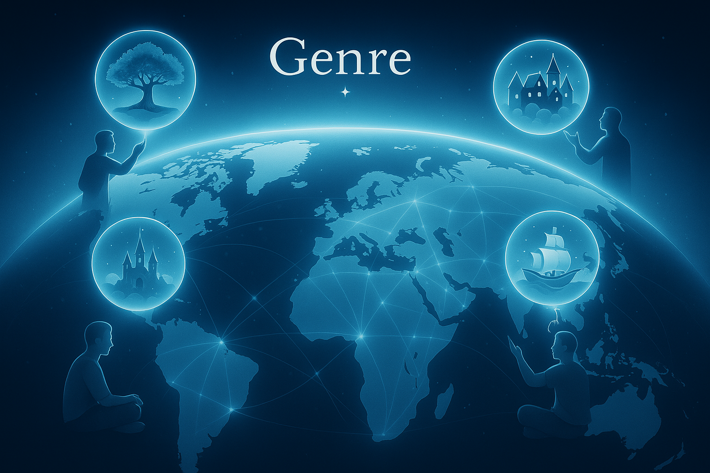

The Elephant in the Room – Let's Talk About the Fear of AI
"Will AI replace me?"
"Will robots take over the world?"
"Is my voice… still mine?"
We get it. AI is moving fast—too fast for most. And for creatives, it can feel like everything you love is being automated, replaced, or devalued. Writers worry their voices will be drowned out by machines. Artists fear becoming obsolete Asking, we all seen jobs will survive. And many feel like humanity is being phased out of its own future. Asking, we all seen Terminator and iRobot ,right??! You're not crazy to feel; that way.
But that's not the world we see.
Genre is not here to replace creators—but to empower them and restore what was lost in the argiculture, industrial and algorithmic age.
___________________________________________________________________________________
The Future Isn't Dystopian. It's a Creative Renaissance.

AI & Robots = Freedom, Not Fear
The world is shifting—fast.
Whether we like it or not, AI and robotics are here to stay.
But maybe that's not a bad thing. At Genre, we believe the real danger isn't AI, robots, or even Big Tech itself.
The danger is in systems built without vision, without care, and without humanity. That's why we created Genre on a different foundation—We believe that "new tech" needs to be designed with a human-first philosophy, designed to empower, to reimage, to make productive, and not replace; but to take us back to our roots.


Why We Fear AI
The fear is real. And it's valid.
Hollywood sold us fear: robots taking over, humans enslaved, creativity commoditized.
Big Tech moves fast: new models every month, entire industries disrupted overnight.
Creators feel powerless: your art used to train systems you never consented to, your work devalued, your future uncertain.
But here's the thing:
Fear only wins if we don't act.
At Genre, we refuse to let fear drive the conversation. We're taking the wheel.
A Different Vision
For the first time since agriculture began, we have the chance to return to who we truly are:
Not just workers—but storytellers, inventors, creators, explorers.
Machines will soon handle the grind—
the repetitive, dangerous, soul-draining tasks that consume our days.
And we?
We can reclaim our time.
We can live fully.
We can create, imagine, invent and be with the ones we love.
We can awaken the Creator Within.
Imagine a world where:
You don't have to sell your time to survive.
You can tell multiple stories in a lifetime—across every genre.
You can build, collaborate, and invent without limits.
You can live as many lives as your imagination allows
This is the future Genre is building. A path back to the sacred. A return to creativity.


The real future isn't dystopia.
It's renaissance.
And at Genre, we're building the tools, platforms, systems, the community, and the philosophy to guide us there —together.
To return to the root of what it means to be human:
TO REIMAGE, TO CREATE, TO EVOLVE, TO SHARE , AND TO BUILD TOGETHER ."
– Tieler Gray, Founder of Genre